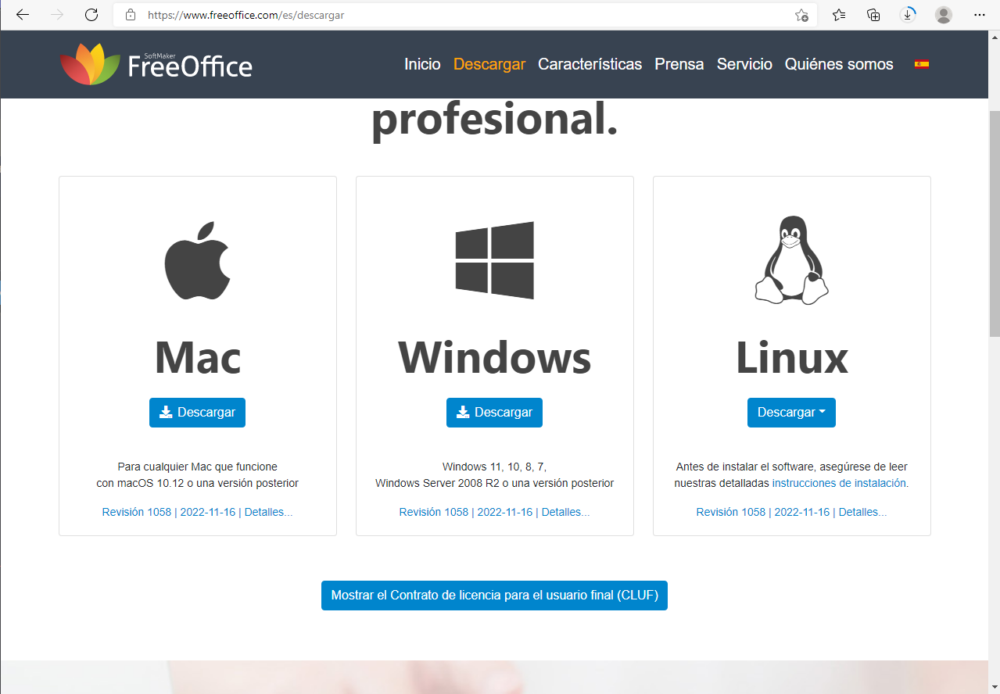
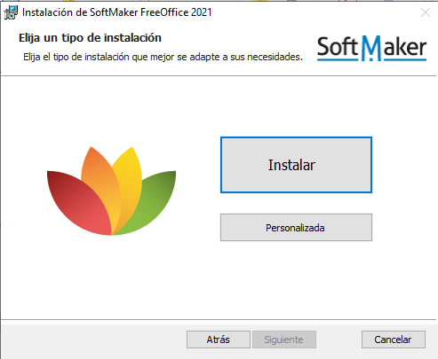

En El caso del software ofimático para Windows, usaremos FreeOffice
En primer lugar, accedemos a la página oficial de FreeOffice
Simplemente descargamos, click derecho sobre el programa, ejecutar como administrador.
Una vez finalizada la instalación, se nos abrirá directamente el programa y se nos creará un acceso directo en el escritorio